Programming & Web
C, C#, Java, JavaScript, Python, C++, HTML5, CSS, GML, GitHub, WordPress

Tampa Bay, Florida
Computer Science Student • Software & GIS • Game Development • Technical Art
I build software, interactive systems, and data-driven tools across programming, GIS, game development, and technical art, with long-term interests in scientific software, ecology, conservation, and games.
About
I am a computer science student at the University of South Florida and a multimedia game-design graduate. My work spans programming, game systems, QA/testing, web development, GIS and data visualization, technical art, project leadership, and digital production.
I also bring hands-on animal and zoo experience through ZooTampa's Animal Nutrition program and my own feeder-insect operation. I am especially interested in roles where software and data intersect with GIS, environmental science, conservation, research, or animal-care systems, while continuing independent game development through Retnuh Productions.
Technical toolkit
C, C#, Java, JavaScript, Python, C++, HTML5, CSS, GML, GitHub, WordPress
QGIS, Power BI, Microsoft Excel, data cleaning, mapping, dashboard design, visualization, QA/QC, recordkeeping
Unity, Godot, Unreal Engine, GameMaker Studio, RPG Maker MZ/VX Ace, gameplay systems, level design, UI implementation
Clip Studio Paint, Aseprite, GIMP, Photoshop, Illustrator, Maya, Blender, Spine 2D, Figma, low-poly modeling, pre-rendered sprite workflows, image processing
Species-specific diet preparation, feeder-insect husbandry, reptile care, sanitation, welfare observation, introductory ZIMS and Zoo Diet NaviGator
Manual testing, bug reproduction, troubleshooting, issue documentation, technical documentation, Computer Organization, RISC-V assembly concepts, project planning
Featured work
Selected work demonstrating programming fundamentals, gameplay systems, GIS/data workflows, responsive web development, APIs, and AI-assisted development.
Cleaning and standardizing public occurrence records for invasive and nonnative reptiles in Florida, then building species- and county-level maps and an interactive dashboard to examine distribution and reporting patterns.
A portfolio project connecting computer science, GIS, environmental data, and my animal/conservation interests.
An extensive Unity/C# controller for a momentum-focused platform RPG, supporting running, jumping, spin states, fluttering, wall interactions, ledge and vine behavior, custom air physics, animation synchronization, and runtime movement tuning.
A multi-file C command-line application built around structs, pointers, and a dynamically allocated linked list. It uses malloc/free, string handling, header files and include guards, sorted insertion, duplicate detection, preference-based search, record deletion, input validation, and complete cleanup of allocated nodes before exit.
A Java coursework application for tracking egg production across individual birds and weeks. It validates input, calculates totals and weekly averages, and identifies the highest producer.
Global Career Accelerator web application built around NASA astronomy data, with API-driven content, responsive presentation, date controls, gallery behavior, and loading/error states.
Responsive educational webpage created through the Global Career Accelerator, emphasizing adaptive layouts, interactive presentation, localization considerations, and support across display sizes.
Global Career Accelerator AI-assisted web project exploring chatbot interaction, JavaScript integration, user-facing recommendations, and deployment workflows.
Browser-game prototype created through the Global Career Accelerator. The assignment required generative AI throughout development, including visual-asset generation. I include it to demonstrate JavaScript game logic, rapid prototyping, iteration, and deployment rather than as a visual-art showcase.
Creative development
Long-term story-driven platform RPG developed through Retnuh Productions. I lead an active multidisciplinary team and have coordinated more than 15 contributors across the project's development, working across programming, systems design, level design, UI, writing, QA, art direction, technical documentation, and production planning.
The current focus is a polished, publisher-facing vertical slice that brings the project's movement, battle, narrative, art, and audio systems together.
An independent Donkey Kong Country-inspired fan RPG used to explore RPG systems, writing, UI, character portraits, custom gameplay behavior, and SNES-style pre-rendered graphics.
I have written custom JavaScript plugins and scripts to extend RPG Maker MZ with unique systems and behaviors beyond its stock functionality, while also creating 3D-to-2D assets, portrait sets, and other production art.
A completed game created for the 2017 Indie Game Making Contest and one of my earlier full project releases. It represents the beginning of my longer-running game-design and production experience.
Technical art & production
Selected production work covering modeling, rigging, rendering, image processing, pixel-art assets, animation, and 2D illustration.
I built a custom Donkey Kong model and rig in Blender, posed and rendered animation frames, then processed those renders into low-resolution 2D sprites inspired by the pre-rendered workflows used by SNES-era games such as Donkey Kong Country and Super Mario RPG.
The workflow combines 3D modeling, armature/rig use, animation posing, rendering, image filtering, sprite-sheet preparation, and batch file manipulation into a repeatable game-asset pipeline.
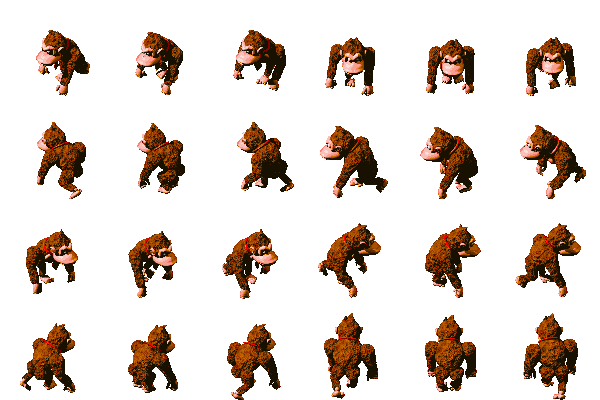
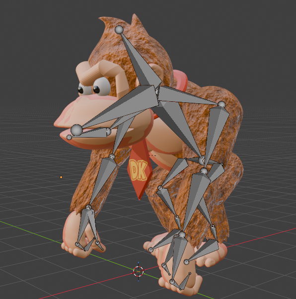
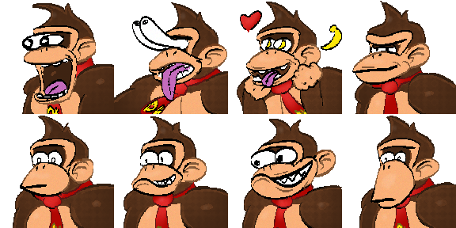
Low-poly environmental and character assets created in Maya for a game-development project, demonstrating simplified modeling, scene construction, and game-oriented 3D asset creation.
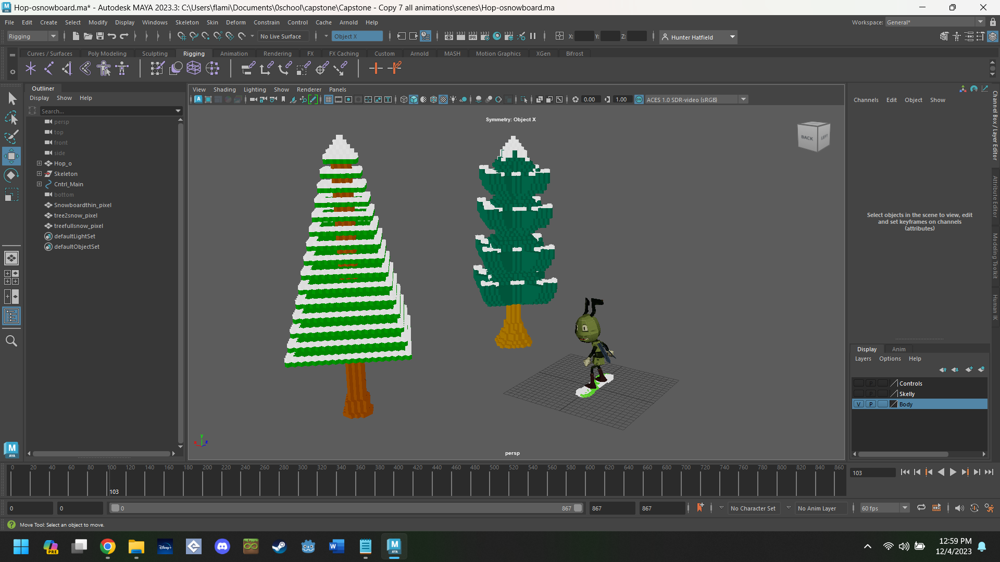
A small cross-section of environmental art, character work, and animated effects from earlier game projects.
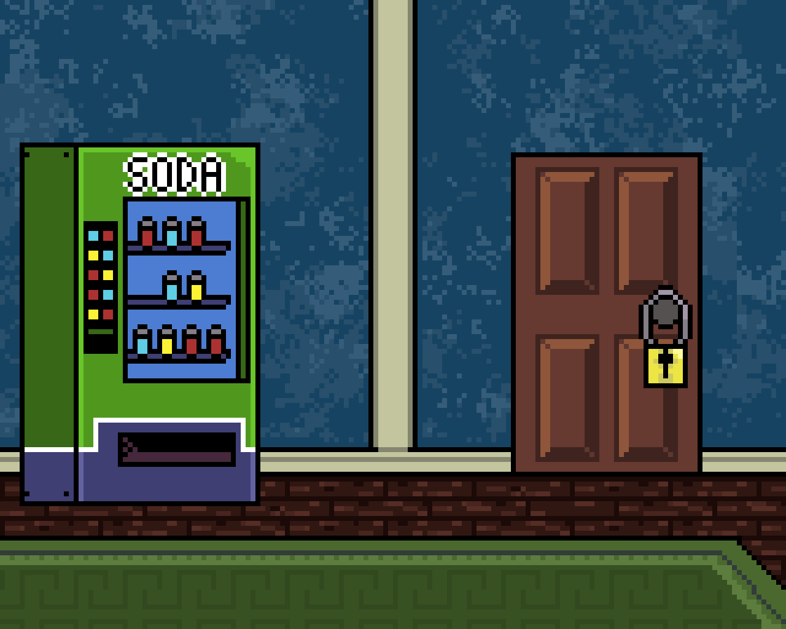
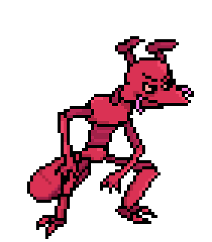
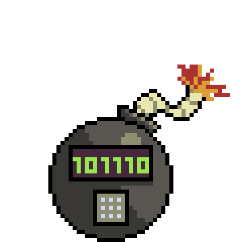
A voxel-style 3D spaceship asset created for Kid Hop-o in Unity, demonstrating stylized game-asset modeling and source-asset preparation.
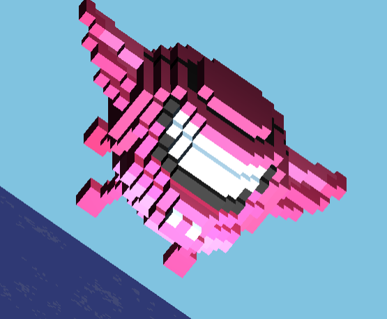
Digital illustration
Character-focused illustration created primarily in Clip Studio Paint, alongside stylistic experiments and game-related portrait work.
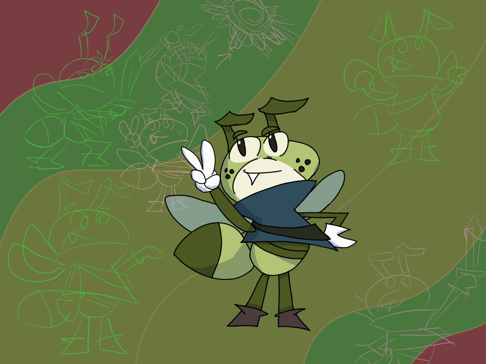
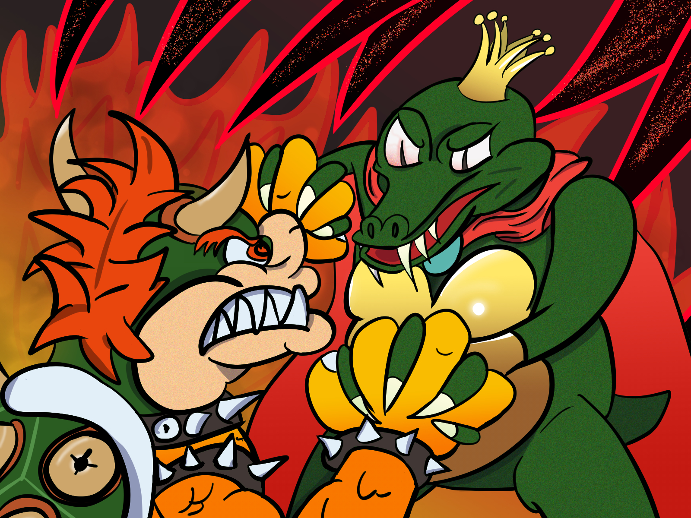


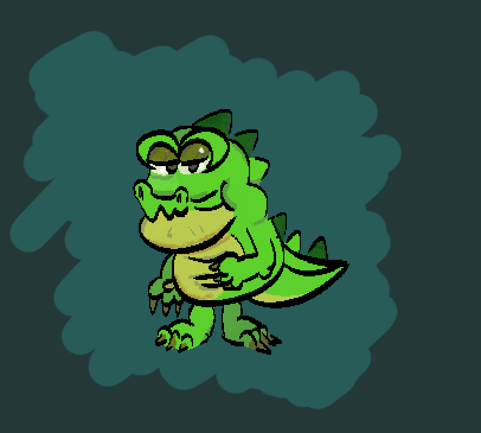
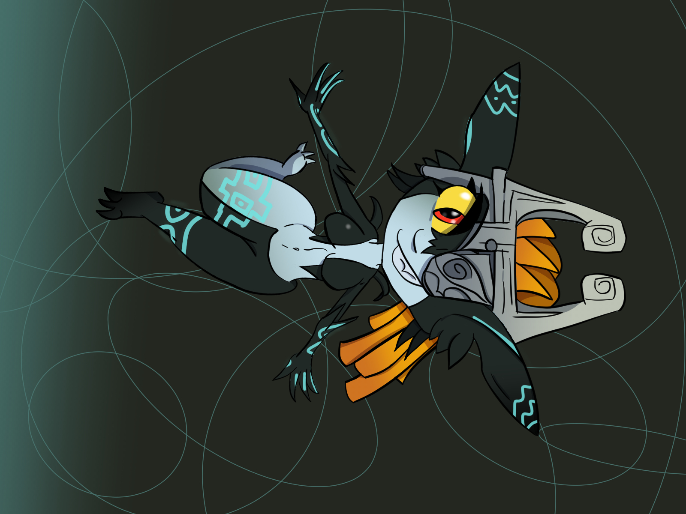
DKCRPG and franchise character studies are fan works presented to demonstrate my own production, modeling, and illustration skills.
Background
Prepared and distributed species-specific diets using written diet sheets and digital scales, supported high-volume nutrition-center operations, maintained feeder insects, followed sanitation and quality-control procedures, and gained introductory exposure to ZIMS, Zoo Diet NaviGator, Power BI, animal behavior, enrichment, welfare, and cooperative-care concepts. Completed a Cuban iguana nutrition research summary for staff.
Lead an active distributed game-development team and have coordinated more than 15 contributors across programming, art, audio, writing, and voice work while designing systems, levels, UI, narrative, production workflows, technical documentation, testing processes, and publisher-facing materials.
Operate a feeder-insect supply business serving local reptile keepers and a retail pet store, managing colony husbandry, environmental control, population monitoring, inventory, client orders, records, and bulk fulfillment of up to several thousand insects.
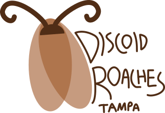
Visit Discoid Roaches TampaExpected 2028
Bachelor of Arts in Computer Science
Minor in Geographic Information Systems
December 2023
Associate of Science in Multimedia: Game Design
High Honors • 3.8 GPA • Phi Theta Kappa
Training